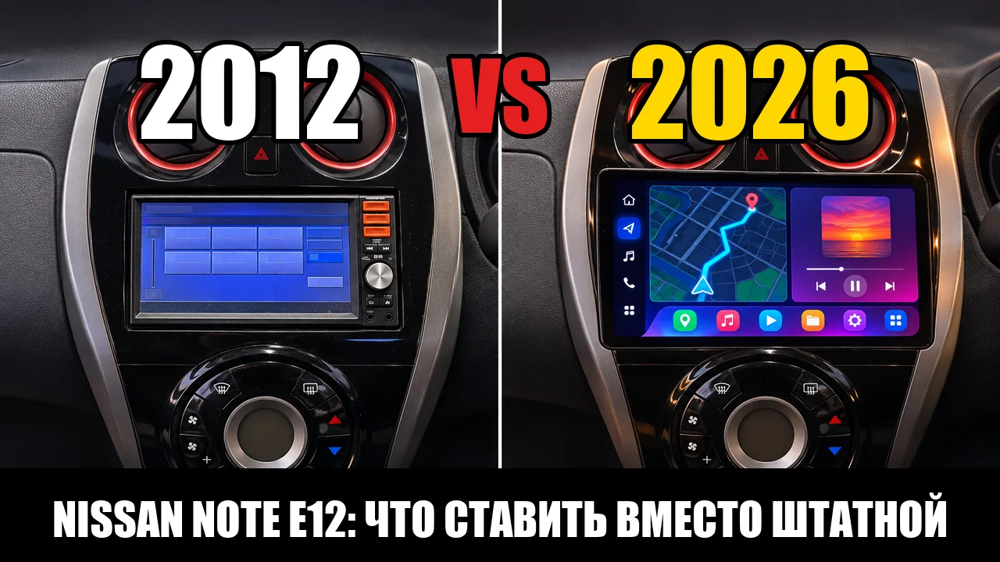
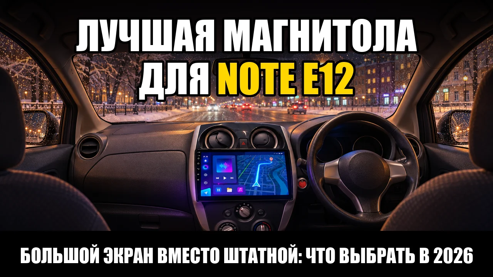

Так карточка выглядит в ленте и в поиске Дзена. Нажмите карточку – откроется статья.
Основная – «год VS 2026»

TSTEYES Сибирь
Лучшая магнитола для Ниссан Ноут Е12: что ставить вместо штатнойNissan Note E12 приехал к нам из Японии, и магнитола в нём до сих пор говорит по-японски.
Статья · 5 минЗапасная – салон вечером

TSTEYES Сибирь
Лучшая магнитола для Ниссан Ноут Е12: что ставить вместо штатнойNissan Note E12 приехал к нам из Японии, и магнитола в нём до сих пор говорит по-японски.
Статья · 5 мин